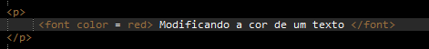
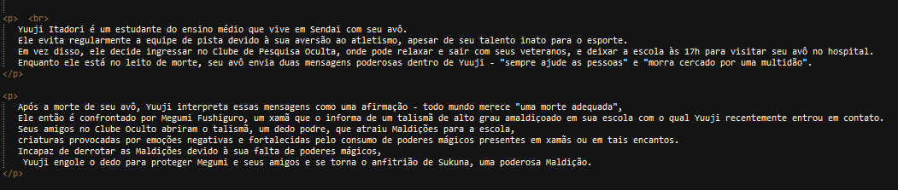
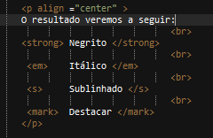
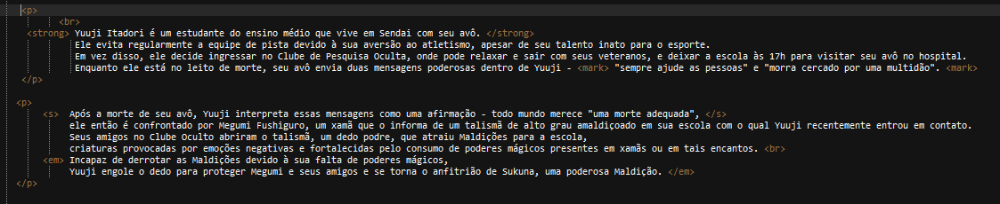

Vamos destacar trechos de textos pertecentes a um paragráfo. Vamos pegar um texto da descrição do anime Jujutsu Kaisen para demostração. A primeira modificação interessante é mudar a cor de um texto, para isso utilizamos a tag descrita abaixo:

O resultado será:
Modificando a cor de um texto
Agora iremos criar um paragráfo no Html, para isso utilizamos a tag:

Teremos como resultado do paragráfo presente na imagem acima:
Yuuji Itadori é um estudante do ensino médio que vive em Sendai com seu avô. Ele evita regularmente a equipe de pista devido à sua aversão ao atletismo, apesar de seu talento inato para o esporte. Em vez disso, ele decide ingressar no Clube de Pesquisa Oculta, onde pode relaxar e sair com seus veteranos, e deixar a escola às 17h para visitar seu avô no hospital. Enquanto ele está no leito de morte, seu avô envia duas mensagens poderosas dentro de Yuuji - "sempre ajude as pessoas" e "morra cercado por uma multidão".
Após a morte de seu avô, Yuuji interpreta essas mensagens como uma afirmação - todo mundo merece "uma morte adequada", Ele então é confrontado por Megumi Fushiguro, um xamã que o informa de um talismã de alto grau amaldiçoado em sua escola com o qual Yuuji recentemente entrou em contato. Seus amigos no Clube Oculto abriram o talismã, um dedo podre, que atraiu Maldições para a escola, criaturas provocadas por emoções negativas e fortalecidas pelo consumo de poderes mágicos presentes em xamãs ou em tais encantos. Incapaz de derrotar as Maldições devido à sua falta de poderes mágicos, Yuuji engole o dedo para proteger Megumi e seus amigos e se torna o anfitrião de Sukuna, uma poderosa Maldição.
O texto acima da descrição de Jujutsu Kaisen não apresenta nenhum destaque ou modificação, agora iremos destacar trechos do texto com tags que nos possibilitam editá-lo.

O resultado veremos a seguir:
Negrito
Itálico
Sublinhado
Destacar
A imagem a seguir irá mostrar como editar trechos do texto em html com as tags mencionadas acima. Vejamos:

Yuuji Itadori é um estudante do ensino médio que vive em Sendai com seu avô.
Ele evita regularmente a equipe de pista devido à sua aversão ao atletismo, apesar de seu talento inato para o esporte.
Em vez disso, ele decide ingressar no Clube de Pesquisa Oculta, onde pode relaxar e sair com seus veteranos, e deixar a escola às 17h para visitar seu avô no hospital.
Enquanto ele está no leito de morte, seu avô envia duas mensagens poderosas dentro de Yuuji - "sempre ajude as pessoas" e "morra cercado por uma multidão".
Após a morte de seu avô, Yuuji interpreta essas mensagens como uma afirmação - todo mundo merece "uma morte adequada",
ele então é confrontado por Megumi Fushiguro, um xamã que o informa de um talismã de alto grau amaldiçoado em sua escola com o qual Yuuji recentemente entrou em contato.
Seus amigos no Clube Oculto abriram o talismã, um dedo podre, que atraiu Maldições para a escola,
criaturas provocadas por emoções negativas e fortalecidas pelo consumo de poderes mágicos presentes em xamãs ou em tais encantos.
Incapaz de derrotar as Maldições devido à sua falta de poderes mágicos,
Yuuji engole o dedo para proteger Megumi e seus amigos e se torna o anfitrião de Sukuna, uma poderosa Maldição.